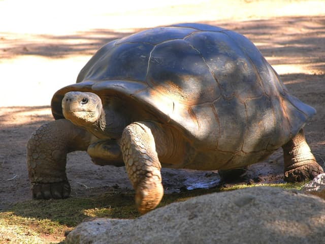
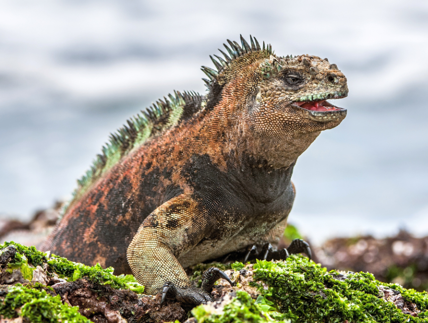

Reptilian Animals
Animals of the category
-

Giant turtles
Galapagos giant tortoises are endemic to the Galapagos Islands, located in the Pacific Ocean off the coast of Ecuador. They are among the largest turtles in the world, some weighing up to 250 kg.
-
 Nile crocodiles
Nile crocodiles
Nile crocodiles are found in Africa, particularly along the Nile, but they are also found in other rivers and bodies of water on the continent. They are fearsome predators with large jaws filled with sharp teeth.
-

Marine iguanas
Marine iguanas are exclusive to the Galapagos Islands. They have evolved unique adaptations for marine life, including the ability to dive and feed on underwater algae.